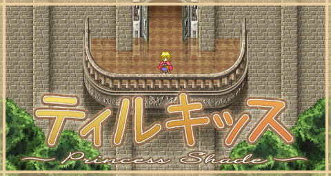

ティルキッス ～Princess Shade～ → ご案内

2017.12.31 ■■■ こんにちは。ＭＩＲです。 「ティルキッス ～Princess Shade～」、 本日フリーソフトとして公開を開始しました。 まだ遊んだことのない方は、この機会に是非遊んでみてください。 インストーラーは付属していません。 解答してexeを実行するとすぐにゲームが始まります。 ダウンロードはこちらから。 ついでに、以前コミケで販売した際に制作した動画を youtubeにアップロードしました。 せっかく動画あるんだから、 もっと早く公開しとけって話ですよね（笑） すっかり存在を忘れてました。 ■■■ また、本ソフトについて宣伝をしてくださったり、 動画サイト等に動画を公開される場合は、 可能な限り、以下の文章を説明欄に記述するようお願いいたいます。 「ティルキッス ～Princess Shade～」は、ゲームサークル「mir-rev」の著作物です。 http://www.mir-rev.com/ 「ティルキッス ～Princess Shade～」は、以下の皆様の作成された グラフィック・音楽・効果音素材を使用して制作されています。 各素材の著作権は、各素材の製作者様に帰属します。 http://www.mir-rev.com/game_tir/an/copyright.html ■■■ それでは皆様、今年一年どうもありがとうございました。 来年もまたよろしくお願いいたします。 |
||